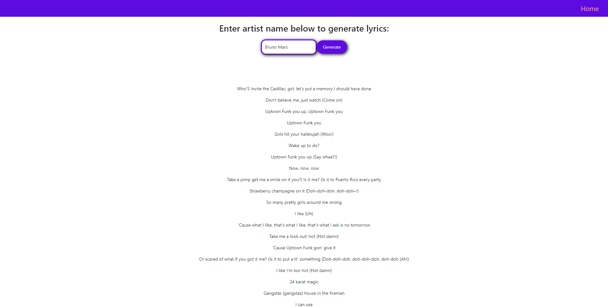
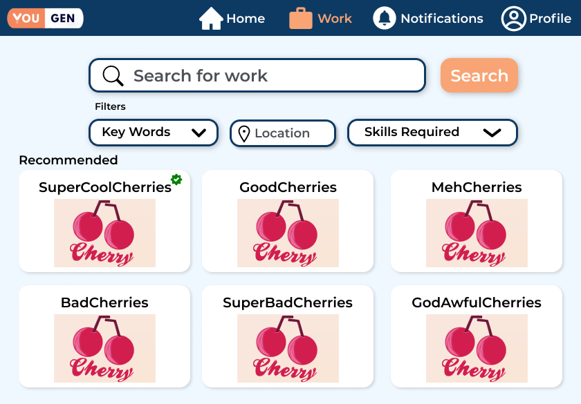
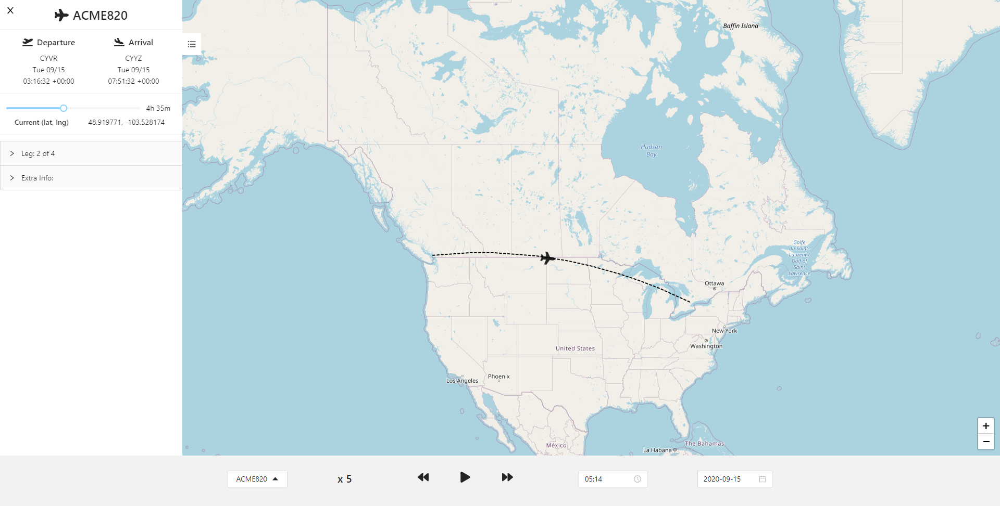
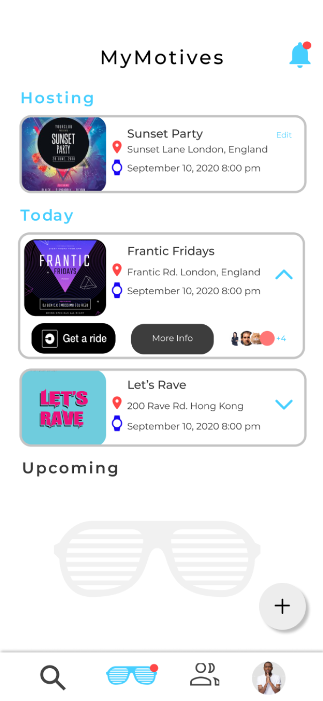
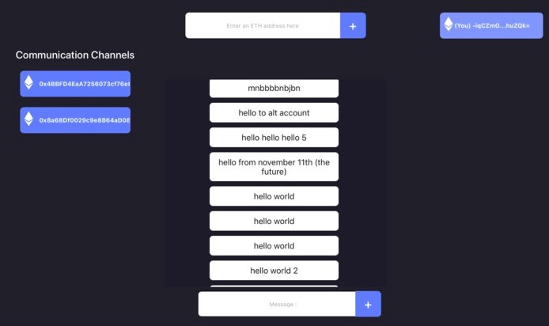

AirFlip uses gesture detection and speech recognition to flip online documents with ease. Users upload any PDF to be displayed on the platform, and they can tilt their head or
say a specific keyword to flip the page in the direction they want.
Hacks/Projects
Markov Chain Lyrics
A web application that uses Markov Chains to generate lyrics from any song artist on the Genius API database. Users can input any song artist, and a web-scraping algorithm
plus a Markov Chain generated using object-oriented programming scrapes potential lyrics to be used.

JAMHacks V - DeviceXchange
DeviceXchange is a web platform that allows users to trade used electronics and devices, as well as learn about their eco-friendliness through a self-developed web-scraping algorithm
that searches information about these devices on the Internet. This project won the Best Environmental/Social Good Hack at JAMHacks V.
TU20 Cup - Yougen
For an entrepreneurship competition called the TU20 Cup, our team developed an MVP for our business Yougen, which aims to pair students with local businesses to gain
work/volunteer experience and mentorship while helping the businesses thrive through small projects. The prototype allows students to search and request for local businesses
to work with, track their progress for current projects, and send reviews at the end of work terms.

Hack the North 2020++ - GoosDaR
GoosDaR is a platform that monitors geese in a real-time setting. An autonomous drone detects and takes images of flocks of geese outside and passes this data to
our web application, which uses a map and gallery to display it.
Visionary - Harled Flight Mapping System
As a participant of Visionary's Fellowship program, I was paired with Harled Inc. to develop a real-time flight mapping web platform. Users can view flights on a global map and their
routes, positions, and addiditional flight information over-time.

MyMotive
While working as the CTO at MyMotive, a student-run startup that aims to help youth with their social lives, I led the development of an MVP mobile app that helps users create
private events and send RSVP invites to their friends. Other minor features include viewing the details of all of your RSVP'ed events and ordering an Uber ride to the event address.

MasseyHacks VI 2020 - CogniTalk
CogniTalk helps users prepare for interviews and maintain/improve their communication skills through practicing. Users can generate a random interview question to respond to
and they can record their response on the app or upload an audio file. Once the audio is analyzed, the analysis is send to a table that helps the user view all of their performances.
This project won second place at MasseyHacks VI.
OpenHacks 2020 - Littermap
Littermap is a web application that maps litter density in specific areas around the world on a global, real-time heatmap. Users can take a picture of a littered area
using the app's webcam and send it to a machine learning model to determine the amount of litter in the photo, and the geolocation of this photo is displayed as a point
on the heatmap with an intensity related to the amount of litter.
Fresh-and-Rotten-Fruits
Curious about methods of implementing machine learning models into web apps, I created an application that classifies fresh and rotten fruits. A trained PyTorch CNN model
(with 0.07 evaluation loss and 99% evaluation accuracy on apples, oranges, and bananas) runs on a Flask backend server, and the frontend uploads fruit images
to the backend, allowing the model to analyze them and return an output.
TOHacks 2020 - COV-Vision
COV-Vision is a web platform that helps doctors diagnose COVID-19 in their patients via machine learning and send diagnostic data to them in a streamlined way.
This project got an honourable mention for the Google Cloud Prize.
WinHacks 2020 - COV-AID
COV-AID is a web application that greatly improves the process of receiving financial aid during the COVID-19 crisis.
It uses OCR to verify a user for aid eligibility and blockchain to securely send funds to them. Our project won WinHacks'
Most Innovative Hack against COVID-19 Award ($1000 CAD prize).
ETHDenver 2020 - TornadoCatch
TornadoCatch is a DApp that raises awareness for network-level privacy issues on Ethereum. It uses a server to
obtain wifi and on-chain data and matches these activities to de-anonymize DApp users on Tornado.cash.
ETHWaterloo 2019 - Blocktalk
Blocktalk is a messaging web application that uses the IPFS protocol to encrypt user messages and store their
hashes in a blockchain. Our project won Fortmatic's 250 CAD (190 DAI) prize.

Hack The North 2019 - Easymoji
Easymoji is a Tkinter app that uses the webcam to capture a picture of your face and find an emoji that best
suits your facial expression.
JAMHacks 3 - OfflineAssist
At JAMHacks 3, our team of 4 created OfflineAssist, an offline Google-services provider, with the main service
being Google Assistant. Our team won 2nd place.
Summer Project - Bibyou
Bibyou allows you to track the sources for all of your assignments and can help you automatically cite
sources in MLA, APA, or Chicago 17th Edition. By a click of a button, you can also edit the sources yourself or
copy the sources to your clipboard.
Awards
Year and Grade
Description
2021 - Year 1
Won a Finalist (top 17 projects) Award at Hack the North 2021.
2021 - Grade 12
Won the Best Environmental/Social Good Hack award at JAMHacks V.
2021 - Grade 12
Earned 6th place for our school (Sir John A. Macdonald S.S.) in the 2021 CEMC Canadian Team Mathematics Contest.
2020 - Grade 11
Won the second place overall prize at MasseyHacks VI.
2020 - Grade 11
Won the Most Innovative Hack against COVID-19 Award at WinHacks 2020.
2020 - Grade 11
Won Distinction Award (top 25%) and made honour rolls (Group II) for the CEMC Fermat 2020 Math Contest.
2018 and 2019 - Grade 10 and 11
Made honour roll for Southwestern Ontario for the 2018 and 2019 COMC.
2019 - Grade 11
Won Fortmatic's 3rd place API prize at ETHWaterloo 2019.
2019 - Grade 10
Won the second place overall prize at JAMHacks 3.
2019 - Grade 10
Won 3rd place at ECOO-CS Regionals and earned a spot to finals at York University.
2019 - Grade 10
Earned 4th place in the WRDSB for ECOO-CS Boardwide and a spot to regionals at Western University.
2018, 2019, 2021 - Grade 9, 10, 12
Won Distinction Award (top 25%) for the 2018, 2019, and 2021 CEMC Euclid Math Contest.
2018 - Grade 10
Won Bronze Award (3rd highest score) for the 2018 Nine Chapters on the Mathematical Art Contest.
2018 - Grade 9
Won Distinction Award (top 25%), made honour rolls (Group IV), and earned School Champion Award for the 2018 CEMC Fryer Math Contest.
2018 - Grade 9
Won Distinction Award (top 25%) and made honour rolls (Group IV) for the 2018 CEMC Pascal Math Contest.
2017 - Grade 9
Won Distinction Award (top 25%) and made honour rolls (Group V) for the 2017 CEMC CIMC.
2016-2017 - Grade 8
Earned Top 25% national for grade on the 2016-2017 Polar Expressions Poem and Short Story Contests and got poem and short story published on a book.
2016 and 2017 - Grade 7 and 8
Won Distinction Award (top 25%) for the 2016 and 2017 CEMC Gauss Math Contest.
2015 - Grade 6
Earned a perfect score, spot on honour rolls, and Distinction Award (top 25%) for the 2015 CEMC Gauss Math Contest.